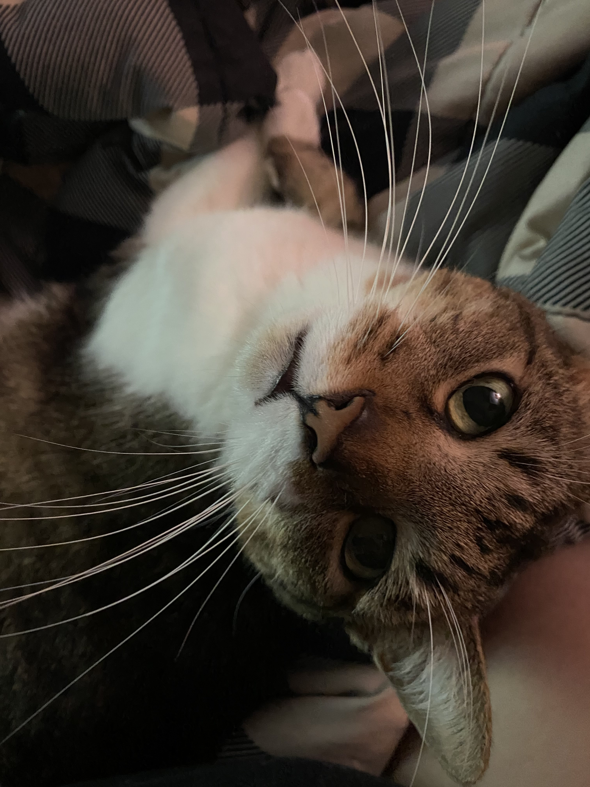

About

About ifelse95
ifelse95 is a plural system of approximately 30 members. Not all members will make an appearance on streams, on the blog, or in videos. We are represented by our collective sona, Iris Chroma.
In addition to being plural, we are also late-diagnosed neurodivergent, chronically ill, and queer. We live with our partner system, Magmasys, and her family and our two cats, Minion and Yasmine. Minion is pictured on the right. You might hear him on stream, he's very talkative!
We began streaming and really putting ourselves out there to overcome our social anxiety and shyness, and to hopefully develop social skills.
With being neurodivergent, we have grown up having trouble with fitting into normal society. Not that we really want to do that anymore. However, being ourselves can be difficult. In addition, with COVID-19 lockdowns, we had a period of time where we were shut off from the rest of the world and lost what little social skills we did have and became extremely shy.
We hope with streaming, we can overcome our shyness. I hope you will join us on this journey. We stream at least twice a week, with no real set schedule in mind. We stream games and art.
About this Iris Chroma
Iris is our collective sona/OC/mascot. They are not a system member, themselves (at least, not yet...). They exist merely to give our being a face.
They do come with some lore, though.
Iris is a genetically modified, artificially gestated human. This basically means that instead of coming from a womb, they were conceived in a lab. They were created by their mother, a mad scientist who couldn't have children of her own. With the combination of DNA and cells from herself and from another person, she created Iris.
They were eventually born, and they grew up and lived an okay life. ...As okay as you can get with having a mad scientist for a mother.
Due to obtaining most of their mother's genes, they are chronically ill and disabled. They are also plural, although the origin of their plurality is unknown.
Iris spends their time making art and taking care of the home. They also like to look after others and will often do that instead of taking care of themselves.
About this Site
ifelse95's house is supposed to serve as the main hub for all of our stuff. Eventually, I would like to add an art gallery and such. We're not very good at web dev, so we'll see.